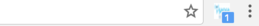
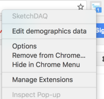
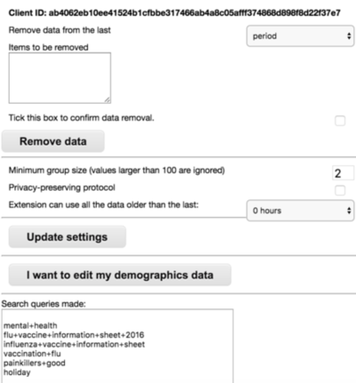

We're conducting an internal experiment to validate the extension's operation.
Please complete the tasks as defined in the right column.
Task 1. Install Chromium browser
The extension is designed for Chrome/Chromium browser. But please do not use Google Chrome!
We did not upload the extension to Chrome Web Store (we do not make it available to public yet).
Google Chrome makes it difficult to use an extension not retrieved from Chrome Web Store.
Task 2. Install the extension and fill the initial demographics form
Note: immediately after installing the extension you will be taken to a tab
with privacy note. Please read it.
Note: immediately after installing and reading the privacy note,
you have the option to provide your demographics data. Please do so.
After providing your demographics data, the information tab should automatically close.
Open chrome://extensions tab in Chromium browser, listing installed extensions.
Do not use Google Chrome.
Drag-and-drop the saved extension to the chrome://extensions tab.
The extension is now installed.
Task 3. Use the extension
Go to www.google.com.
Search for "Holiday".
Click on a found link on the first page with results. Once the page has loaded, hit the back button.
Open anouther found link in new tab.
Search for "hospital".
Click on a found link on the first page with results. Once the page has loaded, hit the back button.
Open another found link in new tab.
Perform the identical operation for the following searches:
"back pain", "mental health", "carrot kitty", "blood pressure", "protein intake", "vaccinations nhs", "xbox christmas pack".
Task 4. Use the extension
This is the i-sense button.

Right click the i-sense button.
Right clicking it opens a menu.

In next tasks, you will work with i-sense menu.
Task 5. Edit demographics data
In i-sense menu, choose edit demographics data.
The demographic data should be prefilled with data you included during the extension's installation.
Change your name and postcode.
Save the new data.
Demographics page will automatically close after saving.
(during a session) Task 6. Select Options tab
In i-sense menu, choose Options.
Options tab should look similar to the image below.

This option allows you to inspect data held by the extension, and to remove some data.
You can also see some additional information, for example: search queries detected by the extension so far,
the Queries of Interest we use in Privacy Mode.
Lukasz now plays with his server, please just wait for instructions to follow.
(Lukasz arranges different private aggregation sessions with varying group sizes, Lukasz
changes the server poll frequency).
Lukasz now says it's over, let's go to another task.
Task 7. Remove data
In Options tab, deselect Privacy-preserving protocol, click Update settings.
Wait for Lukasz's instructions until the next step.
(Lukasz check's if the extension gets back to NoPrivacy mode, i.e. submits raw unencrypted data).
In Options tab, select Remove data from last - select hour.
The extension should display data searcher for in the last hour. Select remove data.
Task 8. Remove the extension
Right-click i-sense button, choose Remove from Chrome.